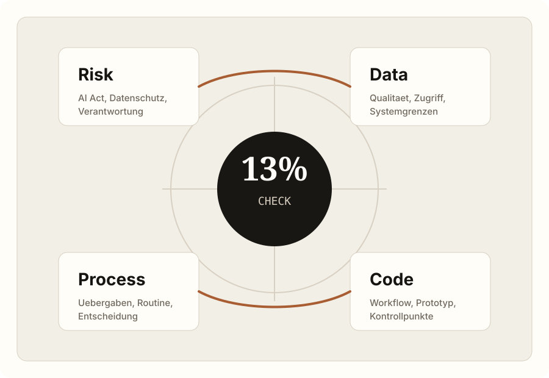
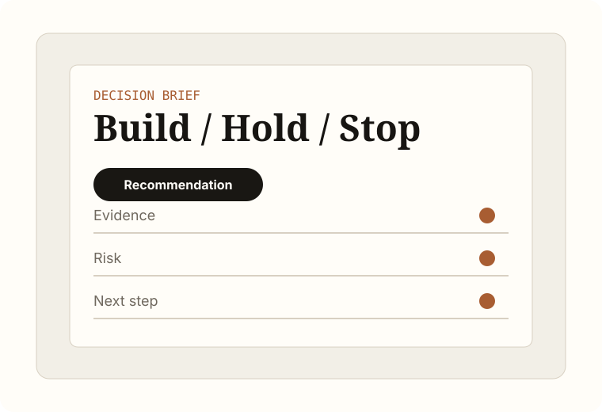
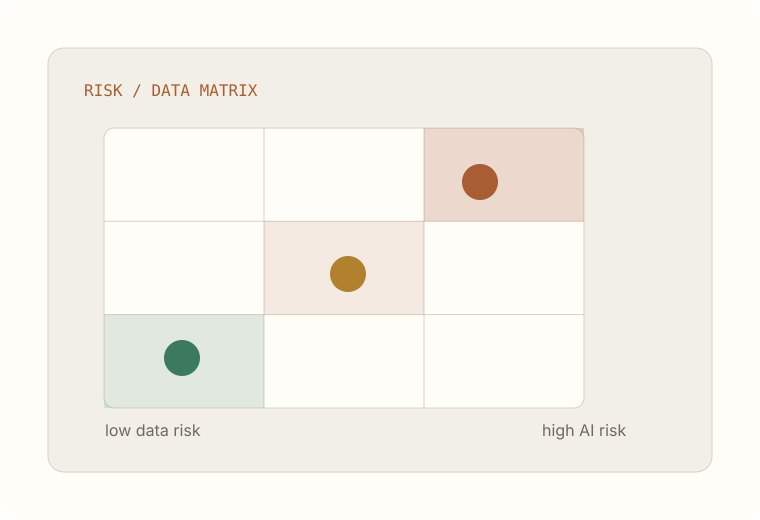
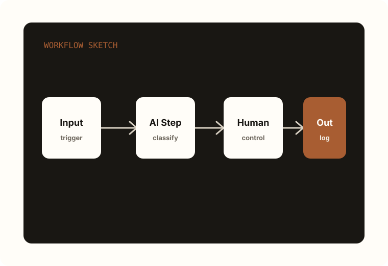
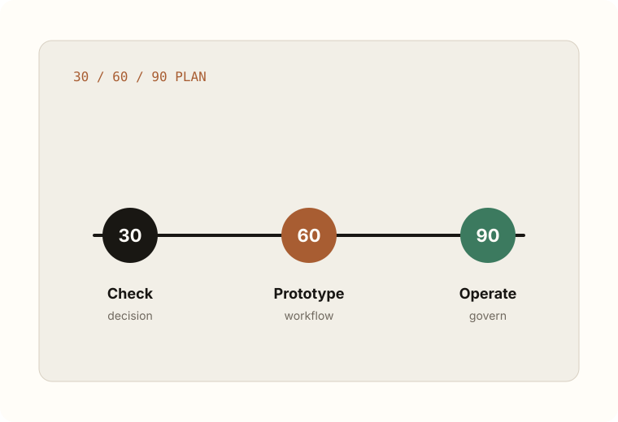

13%-Check
30-Tage-Prüfung für Use Case, Risiko, Datenlage, Prozesswirkung und Umsetzungsfähigkeit.
13%-Check · KI-Strategieberatung · EU AI Act · n8n Automation
Der 13%-Check verdichtet in 30 Tagen, ob Ihr Vorhaben zu den Ausnahmen gehört: Use Case, Datenlage, AI-Act-Risiko, Prozesswirkung und umsetzbarer Workflow – in einem managementtauglichen Entscheidungsbrief.
Signature-Angebot
Die KI-Umsetzungsprüfung zeigt, ob ein Vorhaben Budget, Risiko, Datenlage und Betrieb wirklich besteht.

Arbeitsprinzip
Beratung endet nicht bei einer Folie. Sie muss als lauffähiger Workflow, Entscheidungslogik oder Governance-Artefakt im Betrieb landen.
Leistungsarchitektur
Sie kaufen nicht „KI", sondern Klarheit, Compliance, einen Workflow oder handlungsfähige Teams.
30-Tage-Prüfung für Use Case, Risiko, Datenlage, Prozesswirkung und Umsetzungsfähigkeit.
Risikoklassifizierung, Governance, Dokumentationslogik und executive-taugliche Compliance-Entscheidung.
Ein realer Prozess wird als kontrollierbarer Workflow sichtbar, testbar und entscheidbar.
KI-Kompetenz für Entscheider, Fachbereiche und Verwaltungen mit direktem Praxisbezug.
Proof ohne Fantasie-Cases
Solange keine freigegebenen Kundenartefakte vorliegen, bleibt der Proof ehrlich: konkrete Liefergegenstände statt erfundener Fallstudien.

01Eine managementtaugliche Ja/Nein/Noch-nicht-Empfehlung mit Begründung.

02AI-Act-Einordnung, Datenschutzfragen, Datenlücken und Kontrollpunkte.

03Der Zielprozess als Ablaufgrafik: Eingaben, Entscheidungen, Übergaben, Verantwortung.

04Konkrete nächste Umsetzungsschritte, nicht nur ein Strategiedokument.
Stimmen aus der Praxis
„Was für eine Reise. Mein KI-Werkzeugkoffer ist gut gefüllt und bereit für die Praxisanwendung. Dies war nur der Anfang, danke dir für deine Inspiration."
Teilnehmer Executive KI-Workshop · C-Level Führungskraft
Stimmen aus der Praxis
„Danke für die gemeinsame KI-Reise, die meinen Horizont so enorm erweitert hat! Die praktischen Anwendungen sind sofort umsetzbar."
C-Level Participant · Digitalisierungsverantwortlicher
Stimmen aus der Praxis
„Die KI-Strategieberatung hat uns geholfen, eine klare Roadmap zu entwickeln. Besonders wertvoll waren die branchenspezifischen Insights."
Geschäftsführer · Mittelständisches Unternehmen
Ihr Ergebnis
Sie erhalten keine Toolshow, sondern Klarheit über Nutzen, Risiken, Datenlage und den nächsten umsetzbaren Schritt für Ihre Organisation.
Kostenloser Schnellcheck
Fünf Fragen. Zwei Minuten. Sie erhalten ein klares Profil mit einer konkreten Empfehlung – ob investieren, absichern, prototypisieren oder stoppen.
Orientierungsrechner
Der Rechner ist als Orientierung gebaut, kein Versprechen. Er zeigt aber sofort, wo Automatisierung wirtschaftlich relevant wird.
Nächster Schritt
Starten Sie mit dem 13%-Check oder wählen Sie direkt Risiko-Sprint, Workflow-Prototyp oder Schulung.